diags.RmdMany stock assessment methods use linear regression e.g. for calibration when using CPUE as trends of relative abundance or as part of emprirical harvest control rules. Regression models, however, are vulnerable to abnormal points, which may cause bias, affect estimation accuracy and result in poor prediction skill. This is especially true when the number of observations are small as means there are fewer cases to counter them. Even if there are there many cases miscodes and excluding important explanatory variables can influence the regression model. It is important therefore to identify influential points and explore there impacts
In linear regression, abnormal points can be defined as when there is a large descrepency between the observed Y and predicted Y value given their X value (outlier) and when they have an unusual X-value (leverage). The influence of a point is a function of the discrepency and leverage, e.g.
Influence = Discrepency X LeverageOutliers can be identified using studentized residuals and quantile-comparison plots, leverage can be assessed by exploring the hat-values, and influence by calculating DFBeta or Cook???s Distance. While the bias in parameter estimates can be evaluated using simulation, e.g. the bootstrap or jackknife.
In linear regression the standard deviations of residuals in a sample vary greatly from one data point to another even when if the errors all have the same standard deviation. It does not make sense therefore to compare residuals from different data points without first studentising, where a studentised residual is computed by dividing a residual by an estimate of its standard deviation.
The leverage of a point is related to how much the X value (i.e. the predictor variable) of an observation differs from the mean of that predictor variable. The greater the difference between the X value and the mean the more potential it has to be influential. For example, an observation with a X value equal to the mean has no influence on the slope of the regression line regardless of its Y value, only on the intercept. While a point with an extreme X value has the potential to affect the slope and the intercept.
To calculate the leverage first the predictor variable has to be standardised so that it has a mean of 0 and a standard deviation of 1. Then, the leverage (h) is computed by squaring the observation’s value on the standardised predictor variable, adding 1, and dividing by the number of observations.
The influence of an observation’s is a function of the its leverage and the discrepency. An observation is influential if when omitted the predictions for the other observations differ, influence can be calculated by Cook’s D or the jackknife.
Cook’s D is a measure of the influence is proportional to the sum of the squared differences between predictions made with all observations in the analysis and predictions made leaving out the observation in question. If the predictions are the same regardless of whether the observation is included then it has no influence on the regression model. Alternatively if the predictions differ greatly when the observation is not included in the analysis, then the observation is influential.
A common rule of thumb is that an observation with a value of Cook’s D over 1.0 has too much influence. Although with all rules of thumb, it all depends.
An observation is influentila if when it is omitted the predictions for the other observations differ. ## Influence
An observation’s influence is a function of the leverage and the d Calculation of Cook’s D (Optional)
The first step in calculating the value of Cook’s D for an observation is to predict all the scores in the data once using a regression equation based on all the observations and once using all the observations except the observation in question. The second step is to compute the sum of the squared differences between these two sets of predictions. The final step is to divide this result by 2 times the MSE (see the section on partitioning the variance).
??? Influence Plots (or bubble plots) are useful because they display the studentized residuals, hat-values and Cook???s distances all on the same plot ??? Joint influence is best assessed using Added-Variable Plots (or partial-regression plots)
Data sets with influential points can be linear or nonlinear. In this lesson, we went over an example in which an influential point increased the coefficient of determination. With respect to regression, outliers are influential only if they have a big effect on the regression equation. Sometimes, outliers do not have big effects. For example, when the data set is very large, a single outlier may not have a big effect on the regression equation.
A few questionable data points, i.e. outliers, can skew distributions, make significant results appear insignificant and have an large influence on results. Before identifying outliers it is necessary to characterise what are normal observations. This can be done by examining the overall shape of the data looking for important features and departures from assumptions then identifying any unusual observations that are far removed from the rest of the data. There are various graphical techniques for summarising data distributions, e.g. quantile-quantile, scatter and box plots. Throwing away inconvenient data when they do not support a hypothesis, however, is never a good idea and there is a simple procedure to identify small subsets of data that influence statistical measures. It is called the jackknife.
The jackknife is a resampling technique that is a special case of the bootstrap. It is a relatively simple and straightforward procedure, and has been widely adopted as an estimator of bias for any statistic and as a way to examine the stability of a variance estimate. The jackknife is therefore a useful tool in quality control by identifying outliers and bias in statistical estimates.
In these examples the jackknife procedure is used to identifying CPUE observations with large influence on assessment results.
The Jackknife can be used to illustrate uncertainty by removing one observations at a time sequentially for all observations. This allows the influence of individual points to be evaluated. For example if model estimates are driven by a single influential point results may be unstable.
The simplest way to obtain diags is to install it from CRAN by using the following command in the R console:
install.packages("diags", repos = "http://cloud.r-project.org/")
The repos options can be changed depending on personal preferences and includes options such as choosing the directories in which to install the packages see help(install.packages) for more details.
So that users may have a better idea of what methods are available, which to choose, and where to seek help this section provides a general overview of the package. It also provides some examples of usage, more details are given in later sections.
First, load the package:
library(diags)
There is an example dataset for East Atlantic Bluefin, both for illustration and as a test dataset. Alternatively users can load their own data.
data(dgs)
The dataset contains fits and residuals for the catch per unit effort (CPUE) used to calibarte a virtual population analysis.
As always when accessing a dataset it is a good thing to run a quick sanity check.
[1] "data.frame" "list" "oldClass" "vector" [1] "name" "year" "x" "y" "yhat"
[6] "residual" "sd" "q" "x2" "y2"
[11] "chi2" "residualLag" "qqx" "qqy" "qqHat" Plotting is done using ggplot2 which provides a powerful alternative paradigm for creating both simple and complex plots in R using the ideas the Grammar of Graphics1 The idea of the grammar is to specify the individual building blocks of a plot and then to combine them to create the graphic desired2.
The ggplot functions expects a data.frame for its first argument, data; then a geometric object geom that specifies the actual marks put on to a plot and an aesthetic that is “something you can see” have to be provided. Examples of geometic Objects (geom) include points (geom_point, for scatter plots, dot plots, etc), lines (geom_line, for time series, trend lines, etc) and boxplot (geom_boxplot, for, well, boxplots!). Aesthetic mappings are set with the aes() function and, examples include, position (i.e., on the x and y axes), color (“outside” color), fill (“inside” color), shape (of points), linetype and size.
The CPUE series can be compared by plotting
ggplot(dgs)+ geom_path(aes(year,y,group=name,col=name))
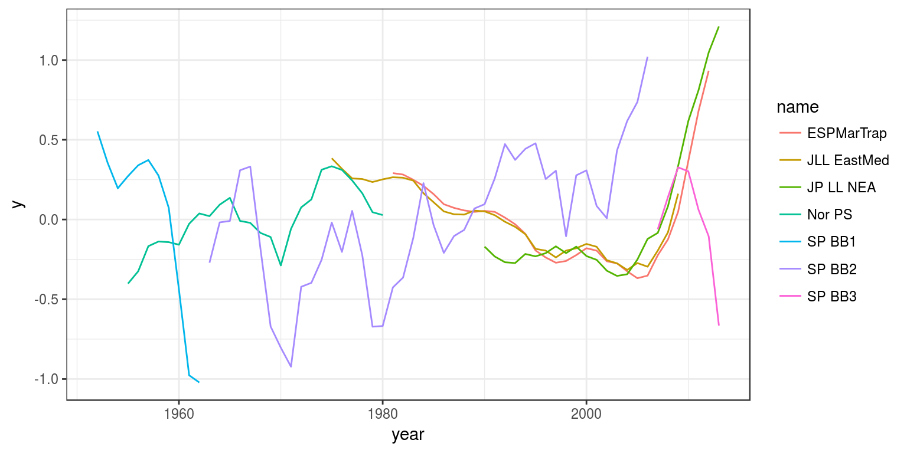
diags contains a variety of functions to summarise assessment results. These are designed to be used with the plyr package to summarise and transform the data.
library(plyr)
plyr has methods for running split-apply-combine procedures, e.g. first splitting a dataset into subsets, then running a function on each subset and then recombining the results back into a single object.
An example of estimating the autocorrelation for a series
par(mfrow = c(4, 2)) par(mar = c(3, 3, 0, 0), oma = c(1, 1, 1, 1)) d_ply(dgs, .(name), with, acf(residual,lag.max=5))
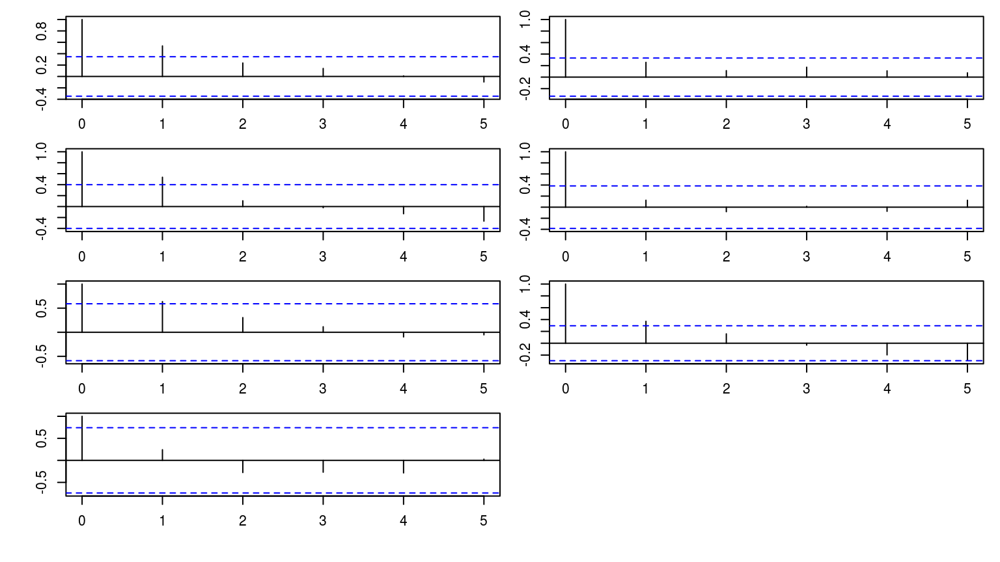
plyr functions have a simple naming convention. The first two letters of the function tells the input and output data types, respectively. The one above takes a data.frame and returns nothing. The next example returns a data.frame
The first argument dgs is the input data frame , the next argument are the variables to subset by over which the statistics will be computed, and the third processes the data.frame by each subset. with creates an environment constructed from data in which to run acf.
Combining with ggplot2
qq=ddply(dgs, .(name), with, as.data.frame(qqnorm(residual,plot=FALSE))) ggplot(aes(x,y),data=qq)+ geom_point()+ geom_smooth(method="lm")+ facet_wrap(~name)
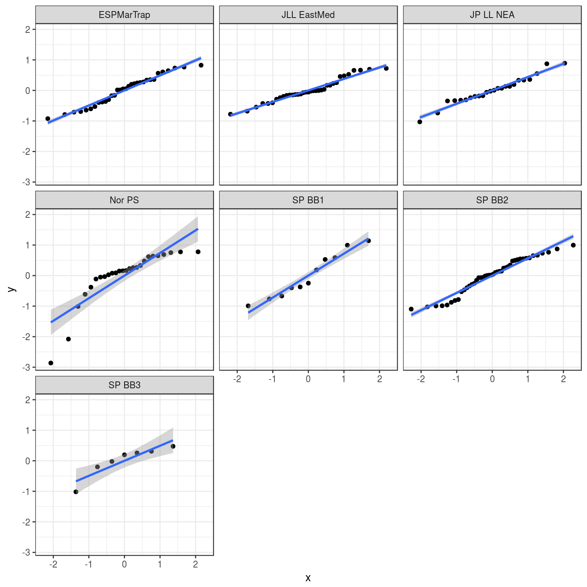
The package provides methods for plotting and summarising Catch per Unit Effort (CPUE) data used when fitting fish stock assessment methods. Programs for stock assessment are generally implemented as standalone executable programs with their own text files for input and output files. provides a set of methods for reading these data and the results from fitting them nto R then using the % package for plotting.
The method reads data from the various stock assessment files into a commom data frame.
The columns identify the observations ( and may include other covariates such as age, season, etc.), the original observations () and the fitted values and the residuals () if has been used to read in the data, the residuals with a lag of 1 () and the quanitiles () assumming a normal distribution.
In some assessment packages the data are in a specific file in other cases the data are in a suite of files found in a dir. Therefore the takes either a file or a dir as irs first arguemnt depending on the assessment method e.g. reading in from vpa2box and SS
For plotting and analysis the data may need to be transformed, e.g. observations scaled so that they can be compared, or pearson residuals computed. This can be done as required using and , e.g. to standardise the residuals or scale them so that they lie between 0 and 1.
[1] 1.201 0.736 0.355 -0.694 -0.429 1.695 -0.243 -1.639 -0.738 -0.244 [1] 0.420 0.321 0.207 1.000 0.000 0.595 0.783 0.408 0.615 0.982If you wish to scale the residuals within a series then the can be used which implements the split-apply-combine strategy for e.g.
One common definition, known as the Pearson residual, is as follows, however the definition depends on the law of large numbers, so it works less well where the number of points in each series is relatively small. Therefore in this anaysis we used the raw residuals, but the residuals could be transformed as required.
There may be other analyses that are useful to run on the raw data, e.g. running a GAM to calculate a common trend that the individual series can be compared to. I.e. to look for trends that may be different from the others. This can be done by fitting a smoother to year and a series effect, the latter scales the series so that they can be compared, e.g.
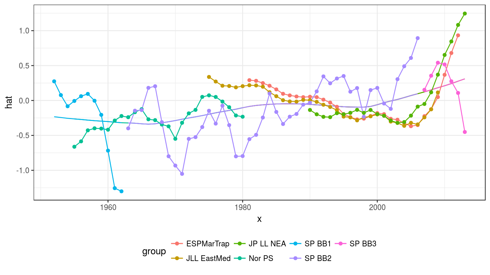
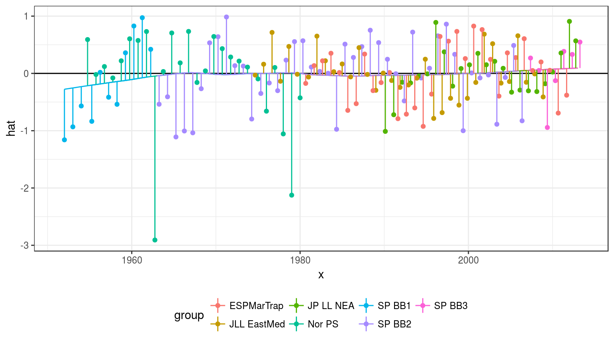
When producing a graphic you have to map data to the visual properties of geometric shapes (e.g. points, lines areas). This may require statistical transformations of the data, a coordinate system that postions the geometric objects on the page and facetting where mutiple plots can be generated. Each of these tasks are independent and the grammar breaks theses into four %components .
First we load up FLR and an example data set based on North Sea plaice. ggplot uses data in the form of a data.frame so we next have to convert the FLR object to a data.frame.
Facetting creates individual panels by the facetting variables, while themes allow you to prettify the plots.
First the CPUE time series are plotted using to plot the common trend as estimated by the GAM, then fits a loess by series and then is used to overlay the original observations. then plots the series individually. is a bespoke theme to change the look of the plot from the default.
The correlations between indices can be seen by plotting the indices against each other
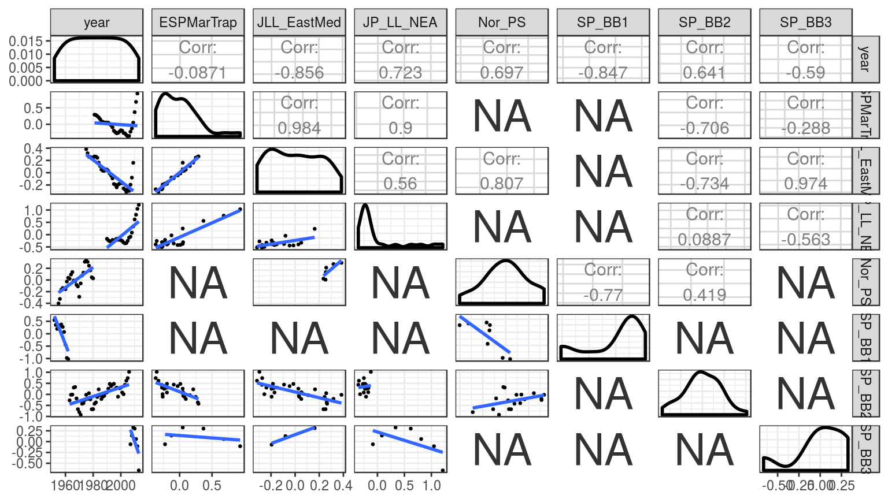The indices are then be grouped based on a cluster analysis
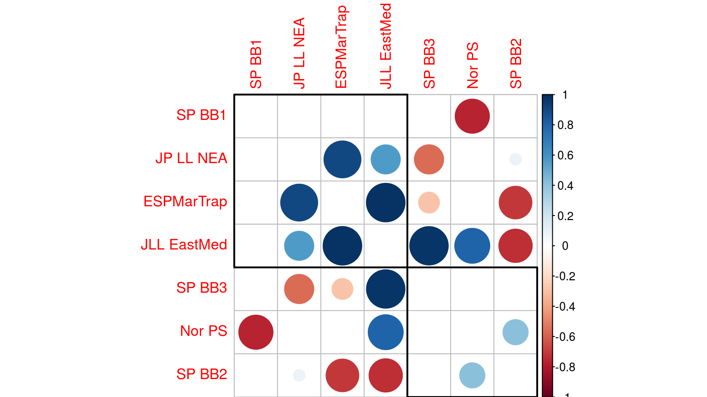
NULLNext the fit to the indices is evaluated by plotting the residuals. The first plot is of the observed and the predicted values. Since \(U=qB\), i.e. the index is assumed to be proportional to stock size the points should fall either side of the \(y=x\) line.
Departures from the assumption that the index is proportional to the stock can also be seen by plotting the residuals by time. \begin{figure}\begin{center} 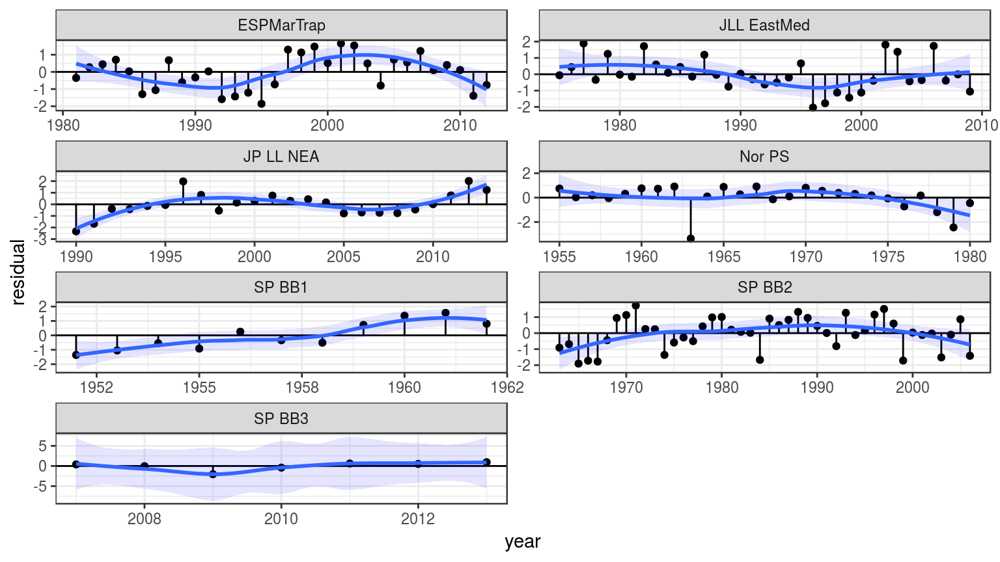 Autocorrelated residuals may mean that the estimated parameters are biased, autocorrelation can be checked by plotting the residuals against each other with a lag e.g. \begin{figure}\begin{center} 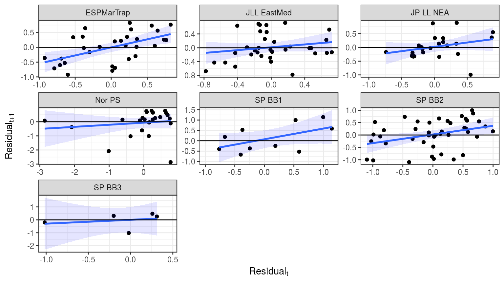 The error dostribution can be checked by plotting the observed and the predicted quantiles for a given distribution e.g. for the normal distributuion \begin{figure}\begin{center} 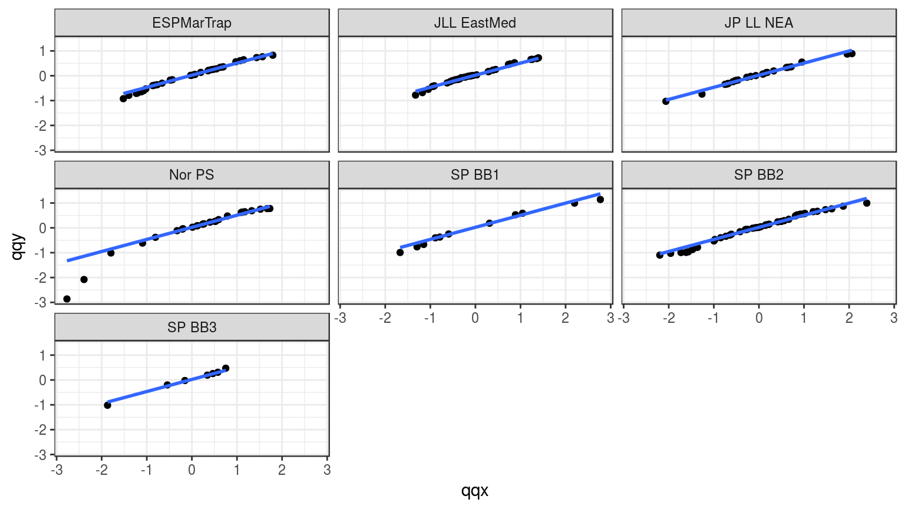 The variance \begin{figure}\begin{center} 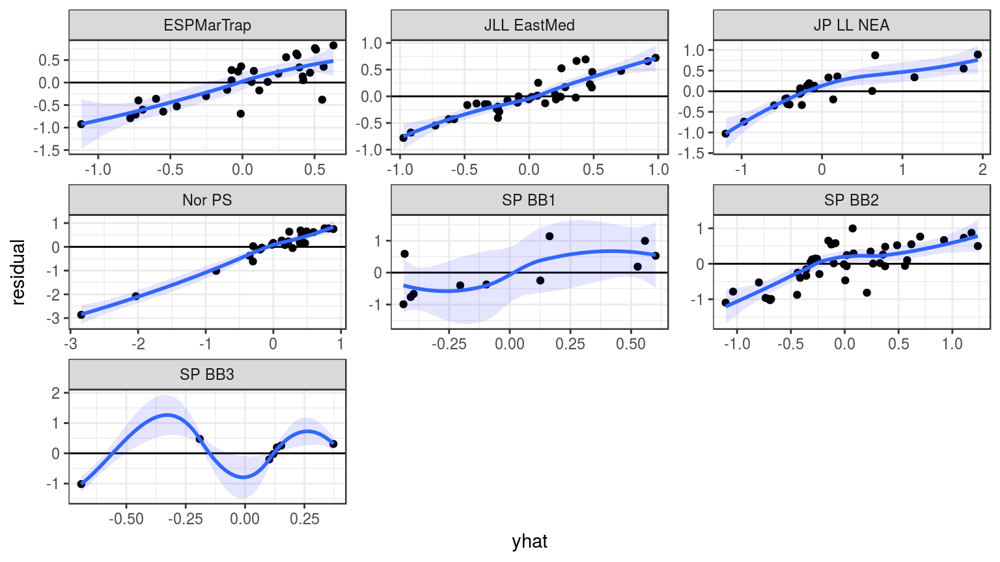Most CPUE series used in stock assessment have been standardised using a Generalised Linear Model (GLM). This requires choosing an appropriate error distribution, variance function andlink function .
The best way to check these assumptions are by plotting, best performed for a model that included all the main factors (i.e the most-complex model) since if the most complex model isnt a reasonable fit, then any simpler models that are selected will fit adequately because if they didn’t they wouldn’t be selected.
Going clockwise from the top left in figure~ the first panel is a q-q plot to check that the residuals follow a normal distribution, the standardised deviance residuals are then plotted against the fitted values to check for systematic departures from the assumptions underlying the error distribution, then thethe absolute values of the residuals against the fitted values as a check of the assumed variance function and finally the dependent variable against the linear predictor function as a check of the assumed link function .
FLPKG at the FLPKG issue page,3 or on the FLR mailing list.FLPKG can always be installed using the devtools package, by callingdevtools::install_github('flr/FLPKG')
This vignette and many of the methods documented in it were developed under the MyDas project funded by the Irish exchequer and EMFF 2014-2020. The overall aim of MyDas is to develop and test a range of assessment models and methods to establish Maximum Sustainable Yield (MSY) reference points (or proxy MSY reference points) across the spectrum of data-limited stocks.
Wilkinson, L. 1999. The Grammar of Graphics, Springer. doi 10.1007/978-3-642-21551-3_13.↩︎
http://tutorials.iq.harvard.edu/R/Rgraphics/Rgraphics.html↩︎